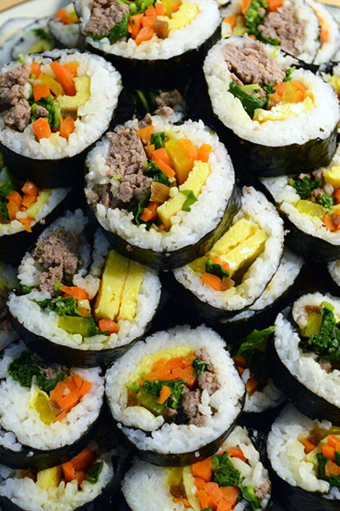

Kimbap

A lovely recipe for a commonly beloved Korean dish!
Ingredients
- Gim (Seaweed paper)
- 2 cups of cooked rice
- 1/4 pound of beef tenderloin or ground beef
- 1 medium carrot
- 2 strips of yellow pickled radish/daikon
- 2 eggs
- 2 cloves of garlic
- 4 ounces of spinach
- soy sauce
- salt
- sesame oil
- vegetable oil
- sugar
- kimbap rolling mat
Directions
- Place cooked rice into a large bowl. Mix in salt and sesame oil
to taste. Mix thoroughly.
- Blanch the spinach for 30 seconds then add minced garlic cloves,
1/2 teaspoon of salt and sesame oil to taste.
- Heat a pan on medium heat. Julienne the carrot stick and cook in
pan until softened. Add salt to taste.
- Add some garlic and oil to the pan and cook beef until fully cooked.
- Crack eggs and whisk until homogenized. Cook eggs in a nonstick pan
with a light coating of oil until cooked through. Cut the eggs into
1/2 inch widestrips.
- Next, put a piece of gim on the rolling mat. Place an even layer of rice
on gim.
- Place, beef, carrot, pickled radish, egg strips and spinach to the center
of the rice.
- Using both hands, roll the gimbap mat over the fillings until you reach
the opposite side. Press tightly with both hands as you roll.
- Cut the roll into 1/4'' pieces and enjoy!